Principal Component Analysis with Pyleoclim#
by Julien Emile-Geay, Deborah Khider
Preamble#
A chief goal of multivariate data analysis is data reduction, which attempts to condense the information contained in a potentially high-dimensional dataset into a few interpretable patterns. Chief among data reduction techniques is Principal Component Analysis (PCA), which organizes the data into orthogonal patterns that account for a decreasing share of variance: the first pattern accounts for the lion’s share, followed by the second, third, and so on. In geophysical timeseries, it is often the case that the first pattern (“mode”) tends to be associated with the longest time scale (e.g. a secular trend). PCA is therefore very useful for exploratory data analysis, and sometimes helps testing theories of climate change (e.g. comparing simulated to observed patterns of change).
Goals#
In this notebook you’ll see how to apply PCA within Pyleoclim. For more details, see Emile-Geay (2017), chap 12. In addition, it will walk you through Monte-Carlo PCA, which is the version of the PCA relevant to the analysis of records that present themselves as age ensembles.
Reading Time: 15 min
Keywords#
Principal Component Analysis, Singular Value Decomposition, Data Reduction
Pre-requisites#
None
Relevant Packages#
statsmodels, matplotlib, pylipd
Data#
Data Description#
for PCA we use the Euro2k database, as the European working group of the PAGES 2k paleotemperature compilation, which gathers proxies from multiple archives, mainly wood, coral, lake sediment and documentary archives.
for MC-PCA we use the SISAL v2 database of speleothem records.
Let’s load packages first:
import pyleoclim as pyleo
import numpy as np
import seaborn as sns
Data Wrangling and Processing#
To load this dataset, we make use of pylipd. We first import everything into a pandas dataframe:
from pylipd.utils.dataset import load_dir
lipd = load_dir(name='Pages2k')
df = lipd.get_timeseries_essentials()
Loading 16 LiPD files
100%|██████████| 16/16 [00:00<00:00, 40.16it/s]
Loaded..
Let’s see what variable names are present in those series. In the LiPD terminology, one has to look at paleoData_variableName, and pandas makes it easy to find unique entries for each.
df['paleoData_variableName'].unique()
array(['d18O', 'uncertainty_temperature', 'temperature', 'notes',
'Mg_Ca.Mg/Ca', 'Uk37', 'trsgi', 'MXD'], dtype=object)
Next, let’s select all the Northern Hemisphere data that can be interpreted as temperature:
dfs = df.query("paleoData_variableName in ('temperature','d18O', 'MXD', 'trsgi') & geo_meanLat > 0")
len(dfs)
17
We should have 17 series. Now, to run PCA we need the various series to overlap in a signicant way. The easiest way to do so is to look for the minimum values of the time variable, which is in years CE:
tmin = dfs['time_values'].apply(lambda x : x.min())
tmin
0 1751.083
3 800.000
4 564.360
5 -90.000
6 -368.000
12 -368.000
13 -368.000
14 1175.000
15 1928.960
16 1897.120
17 -1949.000
19 232.000
20 971.190
21 1260.000
22 760.000
23 -138.000
24 1502.000
Name: time_values, dtype: float64
We see that indices 0, 15 and 16 of the original dataframe have series that start after the 1600s, which wouldn’t be enough time to capture some centennial-scale patterns. Let’s filter them out:
idx = tmin[tmin <= 1600].index # crude. there has to be a better way to pass the results of that query to dfs directly.
dfs_pre1600 = dfs.loc[idx]
dfs_pre1600.info()
<class 'pandas.core.frame.DataFrame'>
Index: 14 entries, 3 to 24
Data columns (total 16 columns):
# Column Non-Null Count Dtype
--- ------ -------------- -----
0 dataSetName 14 non-null object
1 archiveType 14 non-null object
2 geo_meanLat 14 non-null float64
3 geo_meanLon 14 non-null float64
4 geo_meanElev 14 non-null float64
5 paleoData_variableName 14 non-null object
6 paleoData_values 14 non-null object
7 paleoData_units 12 non-null object
8 paleoData_proxy 12 non-null object
9 paleoData_proxyGeneral 0 non-null object
10 time_variableName 14 non-null object
11 time_values 14 non-null object
12 time_units 14 non-null object
13 depth_variableName 2 non-null object
14 depth_values 2 non-null object
15 depth_units 2 non-null object
dtypes: float64(3), object(13)
memory usage: 1.9+ KB
This narrows it down to 14 records. Next, let’s look at resolution:
res_med = dfs_pre1600['time_values'].apply(lambda x: np.median(np.abs(np.diff(x)))) # looking at median spacing between time points for each record
sns.histplot(res_med)
<Axes: xlabel='time_values', ylabel='Count'>
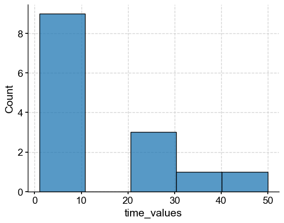
Because PCA requires a common time grid, we have to be a little careful about the resolution of the records. Let’s select those with a resolution finer than 20 years:
idx = np.where(res_med <= 20)
dfs_res = dfs_pre1600.loc[dfs_pre1600.index[idx]]
dfs_res.info()
<class 'pandas.core.frame.DataFrame'>
Index: 9 entries, 5 to 24
Data columns (total 16 columns):
# Column Non-Null Count Dtype
--- ------ -------------- -----
0 dataSetName 9 non-null object
1 archiveType 9 non-null object
2 geo_meanLat 9 non-null float64
3 geo_meanLon 9 non-null float64
4 geo_meanElev 9 non-null float64
5 paleoData_variableName 9 non-null object
6 paleoData_values 9 non-null object
7 paleoData_units 7 non-null object
8 paleoData_proxy 9 non-null object
9 paleoData_proxyGeneral 0 non-null object
10 time_variableName 9 non-null object
11 time_values 9 non-null object
12 time_units 9 non-null object
13 depth_variableName 0 non-null object
14 depth_values 0 non-null object
15 depth_units 0 non-null object
dtypes: float64(3), object(13)
memory usage: 1.2+ KB
Now were are down to 9 proxy records. Next, we iterate over the rows of this dataframe, create GeoSeries objects for each proxy record, and bundle them all into a MultipleGeoSeries object (it will become obvious why in a second):
ts_list = []
for _, row in dfs_res.iterrows():
ts_list.append(pyleo.GeoSeries(time=row['time_values'],value=row['paleoData_values'],
time_name=row['time_variableName'],value_name=row['paleoData_variableName'],
time_unit=row['time_units'], value_unit=row['paleoData_units'],
lat = row['geo_meanLat'], lon = row['geo_meanLon'],
elevation = row['geo_meanElev'], observationType = row['paleoData_proxy'],
archiveType = row['archiveType'], verbose = False,
label=row['dataSetName']+'_'+row['paleoData_variableName']))
Euro2k = pyleo.MultipleGeoSeries(ts_list, label='Euro2k', time_unit='year AD')
Once in this form, it’s trivial to map these records all at once:
fig, ax = Euro2k.map()
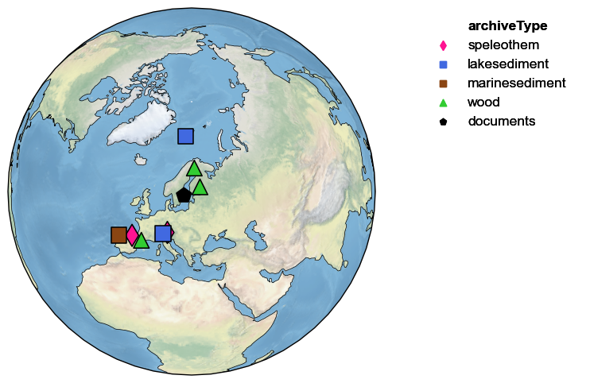
For a relatively localized dataset like this, the default projection is “Orthographic” because it minimally distorts the represented surface, and reminds us that the Earth is (nearly) round (unlike some other, unnamed projections). For a full list of allowable projections, see the cartopy documentation. For more on this, see the mapping notebook.
Because it may be relevant to interpreting the results, let’s map elevation:
fig, ax = Euro2k.map(hue='elevation')
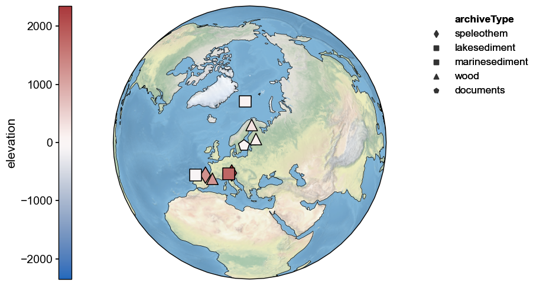
Most records are near sea level, though a few in the Pyrenees and Alps are at altitudes ov several thousand meters. It critical to look at the records themselves prior to feeding them to PCA:
fig, ax = Euro2k.stackplot(v_shift_factor=1.2)
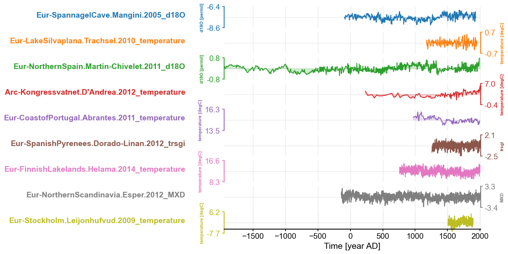
No red flags ; we are ready to proceed with PCA. Notice here that Euro2k, being an instance of MultipleGeoSeries, has access to all the methods of its parent class MultipleSeries, including stackplot()
Principal Component Analysis#
Now let’s perform PCA. To do this, all the Series objects within the collection must be on a common time axis, and it’s also prudent to standardize them so differences in units don’t mess up the scaling of the data matrix on which PCA operates. We can perform both operations at once using method-chaining:
Euro2kc = Euro2k.common_time().standardize()
fig, ax = Euro2kc.stackplot(v_shift_factor=1.2)
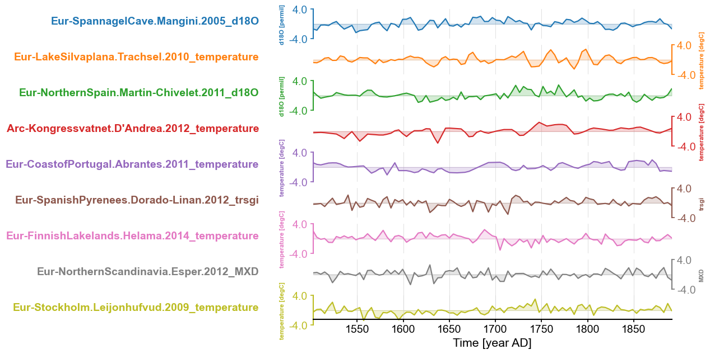
The PCA part is extremely anticlimatic:
pca = Euro2kc.pca()
type(pca)
pyleoclim.core.multivardecomp.MultivariateDecomp
We placed the result of the operation into an object called “pca” (we felt very inspired when we wrote this), which is of type MultivariateDecomp, which contains the following information:
pca.__dict__.keys()
dict_keys(['name', 'eigvals', 'eigvecs', 'pctvar', 'pcs', 'neff', 'orig'])
name is a string used to label plots
eigvals is an array containing the eigenvalues of the covariance matrix
pctvar is the % of the total variance accounted for by each mode (derived from the eigenvalues)
eigvecs is an array containing the eigenvectors of the covariance matrix ()
pcs is an array containing the temporal loadings corresponding to these eigenvectors.
neff is an estimate of the effective sample size (“degrees of freedom”) associated with the principal component. Because of autocorrelation, this number is usually much smaller than the length of the timeseries itself.
orig is the original MultipleGeoSeries (or MultipleSeries) object on which the multivariate decomposition was applied.
locs is an array containing the geographic coordinates as (lat, lon).
The first thing one should look at in such an object is the eigenvalue spectrum, often called a scree plot:
pca.screeplot()
The provided eigenvalue array has only one dimension. UQ defaults to NB82
(<Figure size 600x400 with 1 Axes>,
<Axes: title={'center': 'Euro2k PCA eigenvalues'}, xlabel='Mode index $i$', ylabel='$\\lambda_i$'>)
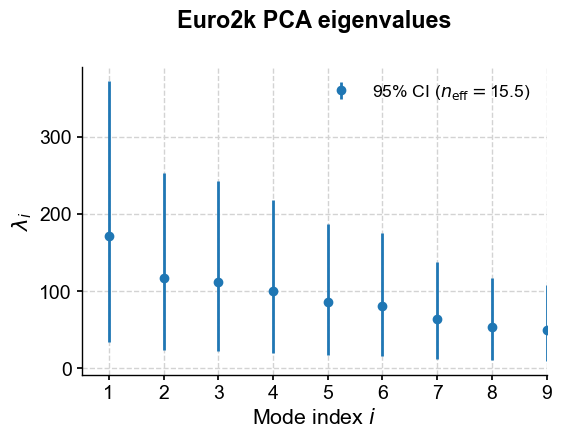
As is nearly always the case with geophysical timeseries, the first handful of eigenvalues trully overwhelm the rest. Eigenvalues are, by themselves, not all that informative; their meaning comes from the fact that their normalized value quantifies the fraction of variance accounted for by each mode. That is readily accessed via:
pca.pctvar[:5] # display only the first 5 values, for brevity
array([20.56227428, 14.00221086, 13.41751132, 12.01685311, 10.30408637])
The first mode accounts for about 20% of the total variance; let’s look at it via modeplot()
pca.modeplot()
(<Figure size 800x800 with 5 Axes>,
{'pc': <Axes: xlabel='Time [year AD]', ylabel='$PC_1$'>,
'psd': <Axes: xlabel='Period [year]', ylabel='PSD'>,
'map': {'cb': <Axes: ylabel='EOF'>,
'map': <GeoAxes: xlabel='lon', ylabel='lat'>,
'leg': <Axes: >}})
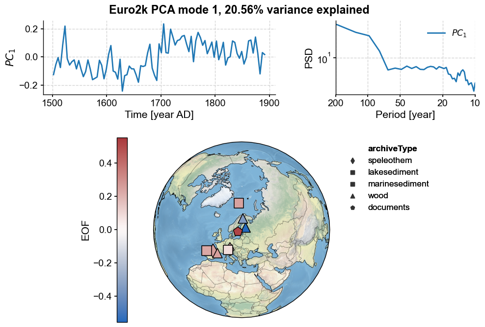
Three features jump at us:
firstly, the first principal component displays a sharp transition around the year 1675.
the figure includes the PC’s spectrum (here, using the MTM method), which is dominated by variation around 200 yr periods, corresponding to the shift in the middle of the series.
the default map projection is again orthographic, but can be adjusted. For instance, let’s set a stereographic projection with bounds appropriate for Europe:
europe = [-10, 30,35,80]
pca.modeplot(map_kwargs={'projection':'Stereographic','extent':europe})
(<Figure size 800x800 with 5 Axes>,
{'pc': <Axes: xlabel='Time [year AD]', ylabel='$PC_1$'>,
'psd': <Axes: xlabel='Period [year]', ylabel='PSD'>,
'map': {'cb': <Axes: ylabel='EOF'>,
'map': <GeoAxes: xlabel='lon', ylabel='lat'>,
'leg': <Axes: >}})
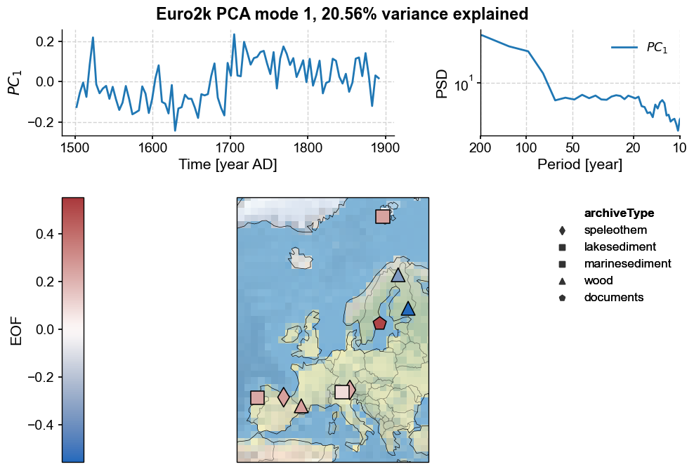
Now let’s look at the second mode:
pca.modeplot(index=1, map_kwargs={'projection':'Stereographic','extent':europe})
(<Figure size 800x800 with 5 Axes>,
{'pc': <Axes: xlabel='Time [year AD]', ylabel='$PC_2$'>,
'psd': <Axes: xlabel='Period [year]', ylabel='PSD'>,
'map': {'cb': <Axes: ylabel='EOF'>,
'map': <GeoAxes: xlabel='lon', ylabel='lat'>,
'leg': <Axes: >}})
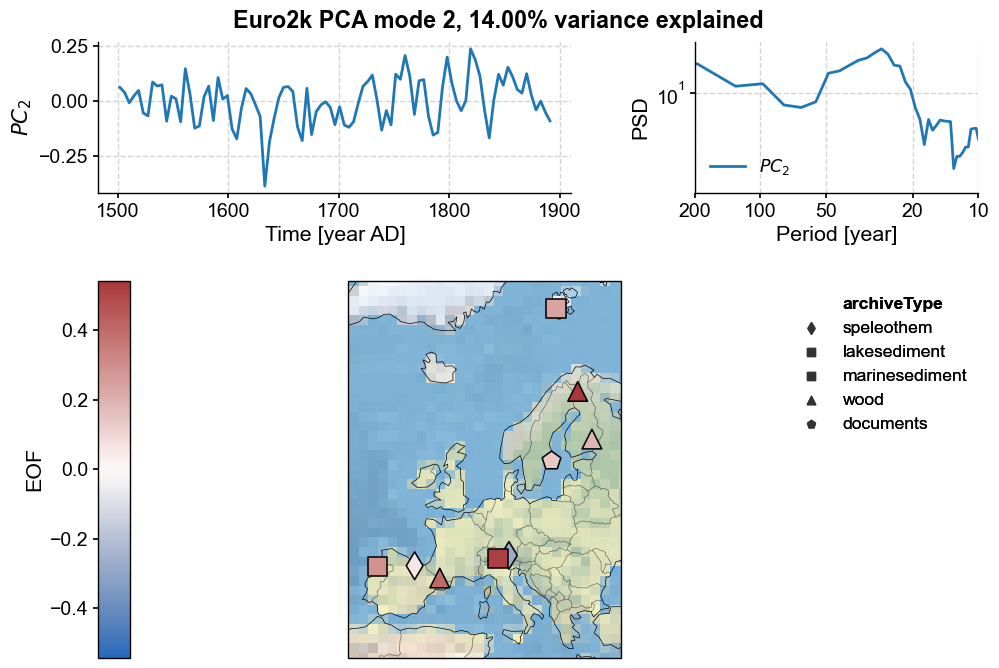
This one has uniformly positive weights. The spectrum shows energetic varaibility at multidecadal timescales. On to the third mode:
pca.modeplot(index=2, map_kwargs={'projection':'Stereographic','extent':europe})
(<Figure size 800x800 with 5 Axes>,
{'pc': <Axes: xlabel='Time [year AD]', ylabel='$PC_3$'>,
'psd': <Axes: xlabel='Period [year]', ylabel='PSD'>,
'map': {'cb': <Axes: ylabel='EOF'>,
'map': <GeoAxes: xlabel='lon', ylabel='lat'>,
'leg': <Axes: >}})
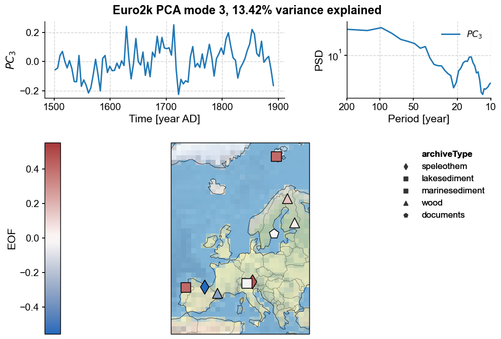
This PC shows evidence of scaling behavior. To look at this in more detail, you could place the principal component into a pyleoclim Series object and apply the tools of spectral analysis:
pc2 = pyleo.Series(value=pca.pcs[:,2], verbose=False, label='Euro2k PC3',
time = Euro2kc.series_list[0].time) # remember Python's zero-based indexing
pc2spec = pc2.spectral(method='mtm')
pc2spec.beta_est().plot()
(<Figure size 1000x400 with 1 Axes>,
<Axes: xlabel='Period [years]', ylabel='PSD'>)
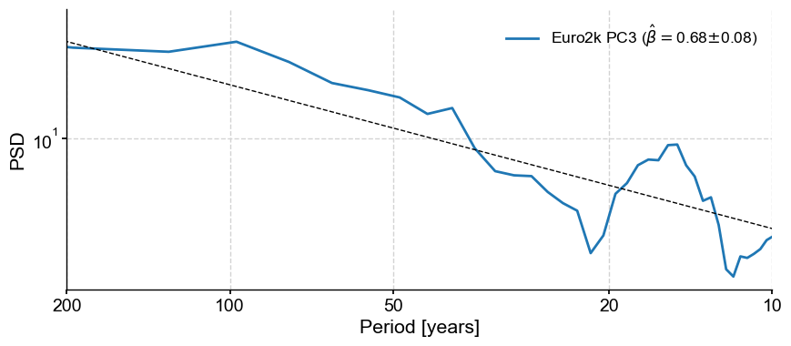
Indeed, the spectrum seems compatible with a shape \(S(f) \propto f^{-\beta}\), where \(\beta \approx 0.71\).
As usual with PCA, we could go down the list, but the interpretability becomes increasingly difficult. You have enough information to proceed with your own analysis now.
Monte Carlo PCA#
In the works. Stay tuned…
Conclusion#
This concludes our tutorial on PCA in Pyleoclim. If you have suggestions for additional features or domains of application, feel free to discuss them on our discourse forum or to open an issue on GitHub.